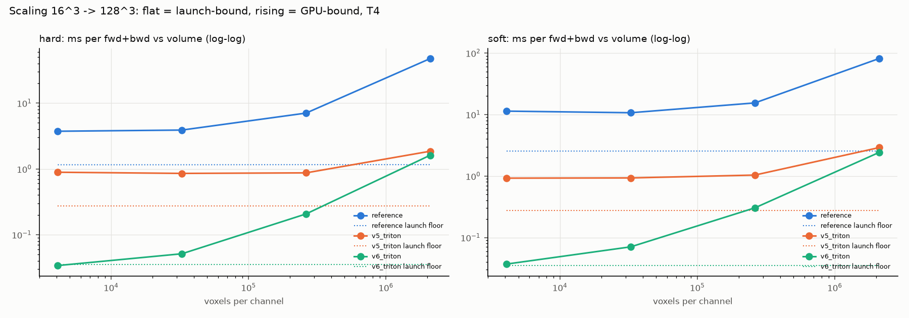
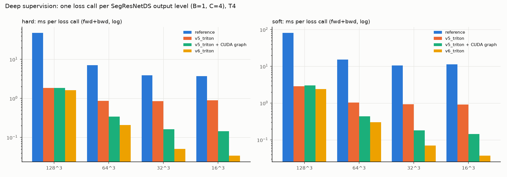

Sprints: S11
5. Sprint 11: launches, O(1) index, packaging, and what failed
Sprint 11 closed the gaps found in the Sprint 9 review. It is also the best example of the method: every change was a hypothesis written down before the run, and three of six were refuted. Refuted hypotheses are results too.
| hypothesis | result | verdict |
|---|---|---|
| O(1) bin index makes the histogram kernel 1.3-2.5x faster | loss 1.05-1.2x faster | partly: binning was not the expensive part |
| tensor-core reduction: 1.5-2.5x | 4-8x slower on the T4 | refuted (no Triton tensor-core path on sm_75) |
| fused epilogue: ~55 -> <= 8 launches, small volumes 2-5x | 7 launches, 32^3 17x, 16^3 26x | confirmed, stronger |
| precise exp fixes the brats21 gradient error for <= 5% | error = reference's, +0-6% | confirmed: default |
| reference slower on realistic inputs, ours insensitive | reference +17-60%, ours within 3% | confirmed |
the reference breaks torch.compile of the step |
the 8 breaks are MONAI DiceLoss, for every loss | refuted for the reference; v6 adds 0 |
Launch overhead and the fused epilogue
Concept. Launching a GPU kernel costs ~5 us of CPU time. v5 did its real work in 2
kernels but needed ~50 more tiny PyTorch ops on [B, C, K] tensors (means, signs,
nanmean, class mask, weights, reduction, and an autograd call for the reduction's
jacobian). On a 128^3 volume that hides behind GPU work; on the small deep-supervision
outputs (32^3, 16^3) the call is launch-bound: its time is the launches.

Proves: v5 is flat at ~0.9 ms from 16^3 to 64^3 (launch-bound); v6 follows the data size down to 0.03 ms.
The fix: one Triton program computes the whole epilogue from the histogram:
23@triton.jit
24def _epilogue_kernel(
25 weight_ptr, # [R, K] float32 bin weight (count for hard); R = B * C'
26 sum_p_ptr, # [R, K]
27 sum_y_ptr, # [R, K]
28 cls_w_ptr, # [C'] float32 class weights (ones when unweighted)
29 coef_ptr, # [R, K] out
30 d_ptr, # [R, K] out
31 jac_ptr, # [R] out: d loss / d f
32 f_ptr, # [R] out: f * present * class weight (reduction "none")
33 loss_ptr, # [1] out: mean / sum of f_ptr
34 R,
35 CL, # loss channels C'
36 EMPTY_W, # soft: a bin is empty below this weight
37 K: tl.constexpr,
38 KP: tl.constexpr,
39 RP: tl.constexpr,
40 HARD: tl.constexpr,
41 IGNORE_EMPTY: tl.constexpr,
42 MEAN: tl.constexpr,
43):
44 rows = tl.arange(0, RP)
45 bins = tl.arange(0, KP)
46 row_ok = rows < R
47 inside = row_ok[:, None] & (bins < K)[None, :]
48 at = rows[:, None] * K + bins[None, :]
49 weight = tl.load(weight_ptr + at, mask=inside, other=0.0)
50 sum_p = tl.load(sum_p_ptr + at, mask=inside, other=0.0)
51 sum_y = tl.load(sum_y_ptr + at, mask=inside, other=0.0)
52 if HARD: # noqa: SIM108 (constexpr branch in a Triton function)
53 filled = weight != 0.0
54 else:
55 filled = weight >= EMPTY_W
56 nonempty = filled & inside
57 safe = tl.where(nonempty, weight, 1.0)
58 d = tl.where(nonempty, tl.div_rn(sum_p, safe) - tl.div_rn(sum_y, safe), 0.0)
59 k_ne = tl.sum(nonempty.to(tl.float32), axis=1) # [RP]
60 err = tl.sum(tl.where(nonempty, tl.abs(d), 0.0), axis=1)
61 f = tl.where(k_ne > 0, tl.div_rn(err, tl.maximum(k_ne, 1.0)), float("nan"))
62 sign = tl.where(d > 0, 1.0, tl.where(d < 0, -1.0, 0.0))
63 denom = tl.maximum(k_ne, 1.0)[:, None] * safe
64 coef = tl.where(nonempty, tl.div_rn(sign, denom), 0.0)
65 tl.store(coef_ptr + at, coef, mask=inside)
66 tl.store(d_ptr + at, d, mask=inside)
67
68 cls_w = tl.load(cls_w_ptr + rows % CL, mask=row_ok, other=0.0)
69 if IGNORE_EMPTY:
70 present = (tl.sum(sum_y, axis=1) > 0).to(tl.float32)
71 f = f * present
72 scale = present * cls_w
73 else:
74 scale = cls_w
75 f = f * cls_w
76 total = tl.sum(tl.where(row_ok, f, 0.0), axis=0)
77 if MEAN:
78 total = total / R
79 scale = scale / R
80 tl.store(f_ptr + rows, f, mask=row_ok)
81 tl.store(jac_ptr + rows, scale, mask=row_ok)
82 tl.store(loss_ptr, total)
All (b, c) rows x K bins in one tile: d, empty bins, K_ne, f (nanmean), coef, presence, class weights, mean/sum reduction and the jacobian. Same formulas and operation order as coefficients + reduce_classes (IEEE division).
| shape | reference | reference + graph | v5_triton | v5_triton + graph | v6_triton | v6_triton + graph |
|---|---|---|---|---|---|---|
| ds0-128 | 47.5 | 47.5 | 1.85 | 1.86 | 1.61 | 1.68 |
| ds1-64 | 7.04 | 6.18 | 0.87 | 0.342 | 0.207 | 0.204 |
| ds2-32 | 3.89 | 2.14 | 0.854 | 0.162 | 0.0513 | 0.0508 |
| ds3-16 | 3.73 | 1.23 | 0.889 | 0.145 | 0.034 | 0.034 |

Proves: summed over the 4 levels of one training step: hard 62 -> 1.9 ms, soft 118 -> 2.8 ms.
O(1) bin index, exactly
Concept. The kernels found a bin by comparing p against all K edges (20 compares,
40 for soft). The edges are almost j / K, so floor(p * K) is within one of the right
bin. Two correction steps against the same float32 edge table make it exact:
36@triton.jit
37def sorted_count(p, table_ptr, n: tl.constexpr, RIGHT: tl.constexpr):
38 """Number of entries counted for ``p`` (``t < p``, or ``t <= p`` if ``RIGHT``)
39 in a sorted table with entry j ~= (j + 1) / n: ``torch.bucketize``'s index.
40 NaN -> 0 (no comparison holds), +inf -> n, as the compare loop."""
41 g = tl.minimum(tl.maximum(p * n, 0.0), n * 1.0)
42 g = tl.where(p == p, g, 0.0).to(tl.int32) # non-negative: truncation = floor
43 for _ in tl.static_range(2):
44 up = tl.load(table_ptr + tl.minimum(g, n - 1))
45 g += ((g < n) & _counted(p, up, RIGHT)).to(tl.int32)
46 lo = tl.load(table_ptr + tl.maximum(g - 1, 0))
47 g -= ((g > 0) & ~_counted(p, lo, RIGHT)).to(tl.int32)
48 return g
Guess floor(p * n), then move up if the next edge is still counted, down if the current one is not. NaN -> 0 and +inf -> n, like the compare loop.
The same logic on the CPU, checked against torch.bucketize on every float32 within
8 ulp of every edge (the test on the GPU does the same for K = 1..100):
import torch
def sorted_count(p, table, right=False):
n = table.numel()
g = torch.clamp(p * n, 0, n).nan_to_num(0).to(torch.int64)
hit = (lambda t: p >= t) if right else (lambda t: p > t)
for _ in range(2):
g = g + ((g < n) & hit(table[torch.clamp(g, max=n - 1)])).long()
g = g - ((g > 0) & ~hit(table[torch.clamp(g - 1, min=0)])).long()
return g
bad = 0
for k in (1, 3, 7, 20, 33, 100):
table = torch.linspace(0, 1 + torch.finfo(torch.float32).eps, k + 1)[1:]
vals = [table]
up, down = table.clone(), table.clone()
for _ in range(8):
up, down = torch.nextafter(up, torch.tensor(2.0)), torch.nextafter(down, torch.tensor(-1.0))
vals += [up, down]
p = torch.cat(vals + [torch.rand(100_000)])
for right in (False, True):
bad += int((sorted_count(p, table, right) != torch.bucketize(p, table, right=right)).sum())
print("mismatches vs torch.bucketize:", bad)
mismatches vs torch.bucketize: 0
Result on the GPU: the loss got only 1.05-1.2x faster. The profile explains it: the
histogram kernel's cost is the [BLOCK, K] reduction (K compares + 3 multiply-sums per
voxel), not the index. That reduction is the remaining gap to the bandwidth limit.
The failed experiment: tensor cores
Idea. The reduction is a matrix product: onehot[K, BLOCK] @ values[BLOCK, 3].
Tensor cores do matrix products in fp16 very fast. To stay exact, every fp32 value is
split into three fp16 parts (a + b/2^11 + c/2^22); a 0/1 one-hot matrix is exact in fp16.
51@triton.jit
52def split3(v):
53 """fp32 ``v`` = a + b / 2^11 + c / 2^22 (error ~2^-33 |v|), a, b, c exact in fp16
54 (returned as fp32)."""
55 a = v.to(tl.float16).to(tl.float32)
56 r = v - a
57 b = (r * 2048.0).to(tl.float16).to(tl.float32)
58 r = r - b * (1.0 / 2048.0)
59 c = (r * 4194304.0).to(tl.float16).to(tl.float32)
60 return a, b, c
Exact fp16 split of an fp32 value (error ~2^-33 |v|); the product with a 0/1 matrix in fp32 accumulation reproduces the fp32 sums.
Result. Correct (tests pass) but 4-8x slower on the T4. Triton uses tensor cores
for tl.dot from compute capability 8.0; on the T4 (7.5) the matmul runs on ordinary
FMA units and does more work than the plain sums. Kept as v6_dot to re-test on the
RTX PRO 6000.
Packaging: custom ops and the drop-in module
torch.compile cannot see inside an autograd.Function that calls Triton (v5 caused 6
graph breaks: an autograd call and data-dependent ops). Registering forward and backward
as torch.library custom ops makes the loss two opaque nodes in the compiled graph:
141@torch.library.custom_op("ace_kernels::v6_forward", mutates_args=())
142def v6_forward(
143 input: torch.Tensor, target: torch.Tensor, config_json: str, precise: bool
144) -> Outputs:
145 """mL1-ACE forward: (loss, coef, d, jac); see ``_forward``."""
146 opt = _op_options(precise)
147 loss, coef, d, jac = _forward(input, target, _config(config_json), opt)
148 # custom ops may not return views of internal buffers: copy the "none" view
149 return loss.clone() if loss.dim() else loss, coef, d, jac
The op's arguments are tensors, a config string and a flag; its outputs are the loss plus the per-bin tensors the backward needs.
152@v6_forward.register_fake
153def _(
154 input: torch.Tensor, target: torch.Tensor, config_json: str, precise: bool
155) -> Outputs:
156 config = _config(config_json)
157 b, c = input.shape[:2]
158 cl = c - (1 if (not config.include_background and c > 1) else 0)
159 per_bin = input.new_empty((b, cl, config.num_bins), dtype=torch.float32)
160 loss_shape = (b, cl, *([1] * (input.dim() - 2)))
161 loss = input.new_empty(
162 loss_shape if config.reduction == "none" else (), dtype=torch.float32
163 )
164 jac = input.new_empty((b, cl), dtype=torch.float32)
165 return loss, per_bin, torch.empty_like(per_bin), jac
register_fake: output shapes without running the kernel (what torch.compile traces with).
Precise vs fast exp: Triton's tl.exp is a fast approximation; probabilities can differ
from torch.softmax by an ulp and move a near-edge voxel to the neighbouring bin:
28@triton.jit
29def exp_tl(x, PRECISE: tl.constexpr):
30 """``tl.exp`` (fast approximate ex2) or libdevice ``expf`` (as CUDA PyTorch)."""
31 if PRECISE: # noqa: SIM108 (constexpr branch in a Triton function)
32 y = libdevice.exp(x)
33 else:
34 y = tl.exp(x)
35 return y
PRECISE (constexpr) selects libdevice expf, the function CUDA PyTorch uses. Cost on the T4: 0-6%.
The deliverable wraps all this in the upstream constructor:
108class HardL1ACELoss(_ACELoss):
109 """Hard-binned L1 average calibration error (mL1-ACE); upstream signature."""
110
111 binning: Binning = "hard"
112
113 def __init__(
114 self,
115 num_bins: int = 20,
116 include_background: bool = True,
117 to_onehot_y: bool = False,
118 sigmoid: bool = False,
119 softmax: bool = False,
120 other_act: Callable[[torch.Tensor], torch.Tensor] | None = None,
121 reduction: LossReduction | str = LossReduction.MEAN,
122 weight: Weight = None,
123 right: bool = False,
124 ignore_empty_classes: bool = True,
125 *,
126 impl: str = "auto",
127 ) -> None:
128 super().__init__(
129 num_bins=num_bins,
130 include_background=include_background,
131 to_onehot_y=to_onehot_y,
132 sigmoid=sigmoid,
133 softmax=softmax,
134 other_act=other_act,
135 reduction=reduction,
136 weight=weight,
137 empty_weight=0.01, # unused by hard binning
138 right=right,
139 ignore_empty_classes=ignore_empty_classes,
140 impl=impl,
141 )
Same arguments, order and defaults as upstream (a test compares the signatures); impl is the only addition, keyword-only.
Try it
$ uv run pytest tests/test_module.py -vsignature identical to upstream; 43 cases vs the upstream classes (CPU; CUDA on Kaggle)
$ uv run python -c "from ace_kernels.module import SoftL1ACELoss; import torch; l = SoftL1ACELoss(to_onehot_y=True, softmax=True); x = torch.randn(1, 4, 16, 16, 16, requires_grad=True); y = torch.randint(0, 4, (1, 1, 16, 16, 16)); print(l(x, y)); print(l.resolve_impl(x.device))"on a Mac: the PyTorch v2 path (v2_recompute)